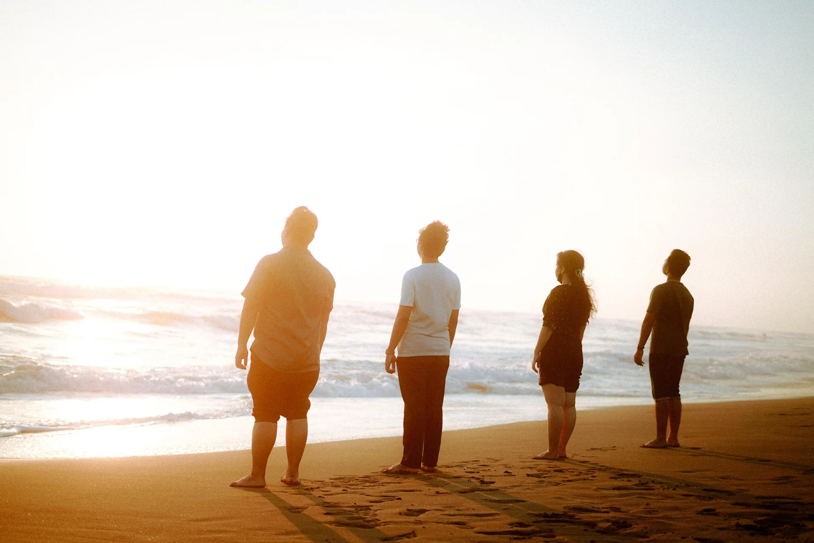

Studio Vocal Specialist & Producer

Tentang Anton Yoga
Anton Yoga merupakan praktisi vokal, vocal director, dan arranger harmoni berpengalaman di Yogyakarta. Dalam proses rekaman studio, Anton berperan krusial dalam membimbing penyanyi—mulai dari artikulasi, kontrol pernapasan, intonasi pitch, hingga penjiwaan emosional lirik. Salah satu karya terkenalnya adalah keterlibatannya pada original soundtrack serial nasional "Langit Senja" (Jingga & Senja 2) bersama aktris Yoriko Angeline, serta berbagai aransemen harmoni vokal pada rilisan Sub-Record Studio.
Portofolio & Kolaborasi Musik:

Vocal Direction & Coaching
Pengarah vokal rekaman talent & klien SRS
In-Studio SpecialistLayanan Khusus Vocal Directing:
- Pendampingan sesi rekaman vokal agar hasil take maksimal dan tidak fales
- Perancangan aransemen vokal latar (backing vocal & choir harmoni 3-suara)
- Vocal workshop & coaching privat sebelum jadwal rekaman lagu original